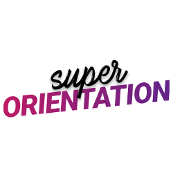
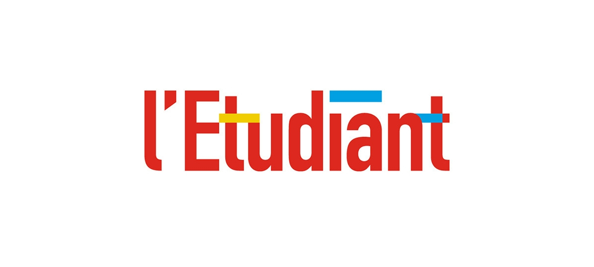
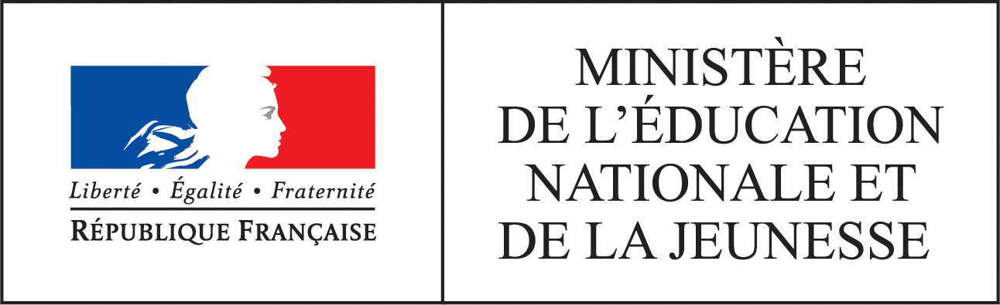

Après votre DUT Info
Acceuil
Catégorie
Aide
A propos
Des sites a visiter aussi
Onisep
L’Onisep a pour vocation d’informer sur les formations, les métiers, les secteurs professionnels. Il guide les jeunes et leur famille dans leurs choix de parcours de formation et de projet professionnel.
Studyrama
En tant qu’acteur référent du monde de l’orientation et de l’aide à la réussite aux examens et aux concours, notre vocation est d’accompagner et de conseiller chaque individu tout au long de son parcours étudiant et professionnel.
Diplomeo
Diplomeo est un des principaux moteurs de recherche de formations en France. Il recense plus de 40 000 formations ciblant les étudiants.C'est un outil rassemblant en un seul endroit toutes les informations concernant l’enseignement supérieur
Imaginetonfutur
Sur imaginetonfutur retrouvez plus de 600 fiches métiers et des infos pratiques sur votre futur diplome pour trouver le métier vous convient.

Orientation.com
DigiSchool orientation est un annuaire référence des formations supérieures en France. Trouvez facilement l'établissement, le métier ou le diplôme idéal en seulement quelques clics.

L'étudiant
Letudiant.fr est l’un des sites Internet les plus variés en matière d’orientation. Il propose de très nombreuses fonctionnalités pour guider les étudiants: tests, coaching, boite à outils, fiches métiers, annuaires, reportages et conseils de conseiller d'orientation… On ne peut toutes les citer ici tant elles sont nombreuses. Comme son nom l’indique, ce site est plutôt destiné aux étudiants post-bac.

Education.gouv
Le site Internet de l’Education Nationale propose également de nombreux services et renseignements en termes d’orientation. En effet, en fonction de votre série de BAC, le site vous indique les types de formations et les voies d’orientation qui peuvent vous convenir.